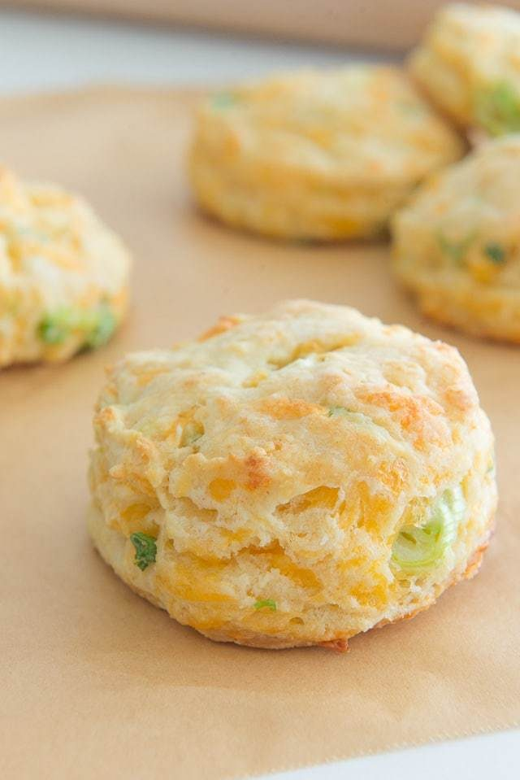

Cheddar Scallion Biscuits

This recipe is awesome and works. Yum yum.
While on my travels I came across this recipe while I was actually looking for scones.
They are amazing, straight out the oven or coold down. Your choice.
Required Ingredients - go to the real recipe for an more accurate version
- Flour
- baking powder
- baking soda
- salt
- unsalted butter
- cheddar cheese
- scallions
- buttermilk
Steps. Not really. Seriously, go to the link.
- Preheat the oven to 450 degrees F.
- Whisk to combine the flour, baking powder, baking soda, and salt.
- Add the cubed butter, and break it down with your fingertips, working it into the dry ingredients to coat the little butter pieces with flour (see video if needed). When the butter has been smushed down into large flakes, stir in the cheddar and scallions.
- Pour in the buttermilk, and toss everything around, thinking of moistening the dough and distributing the liquid instead of working or overstirring the dough. The dough should be relatively clumped together.
- Flour your countertop lightly and gently pat and roll the dough out into a circle or rectangle. Use a biscuit cutter to cut out little biscuits (or, just cut it up into square pieces).
- Place the biscuits on a parchment or silicone mat-lined baking sheet and bake for 10 minutes. Enjoy!!!
Back to home